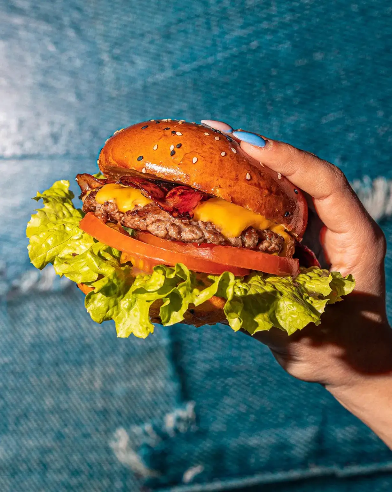
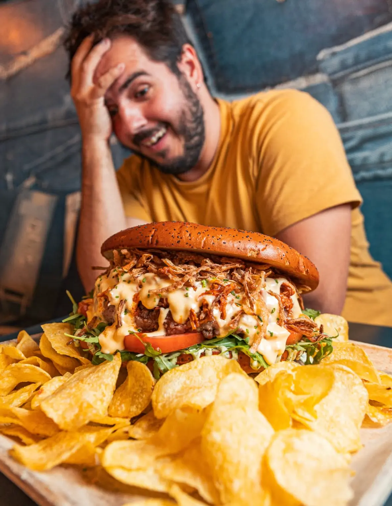
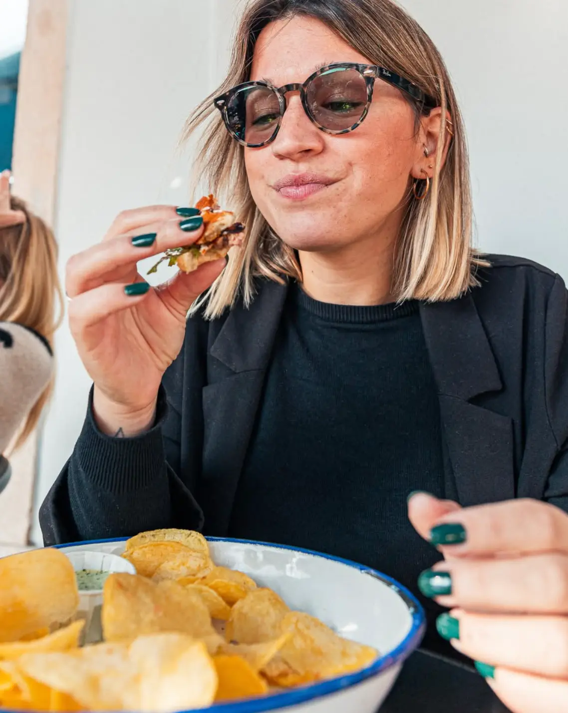
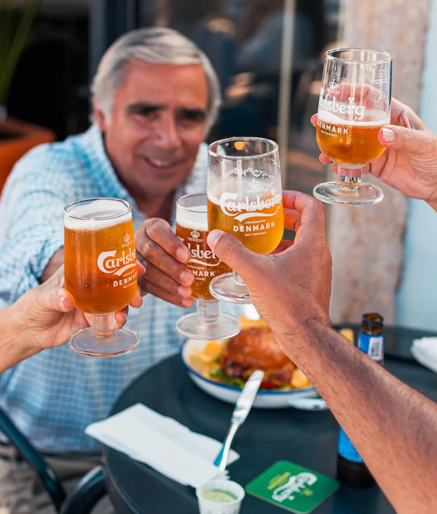
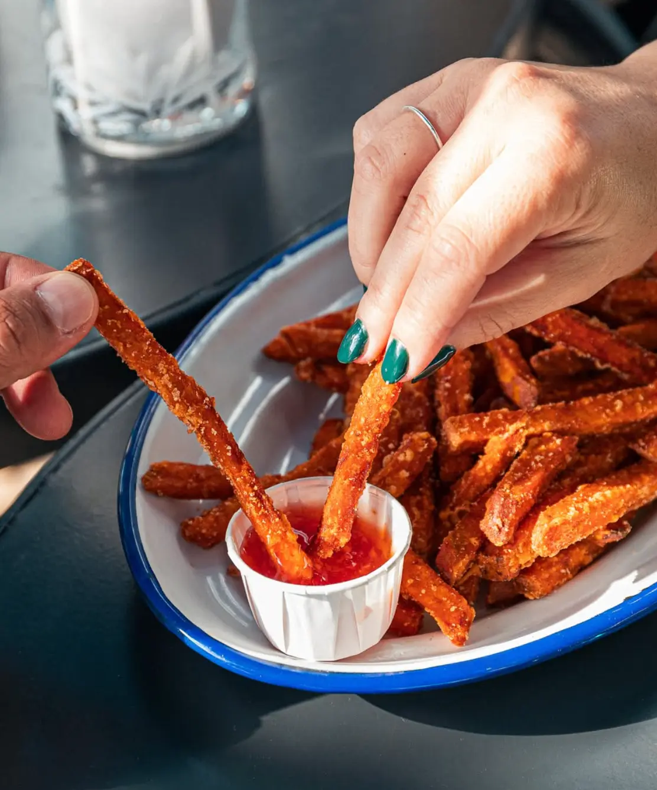
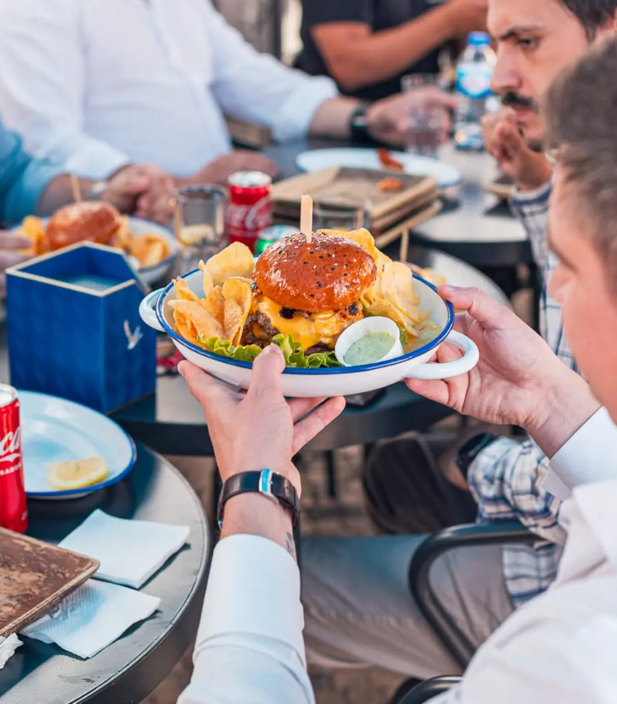
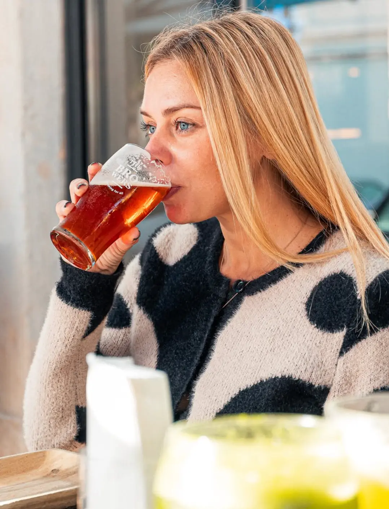
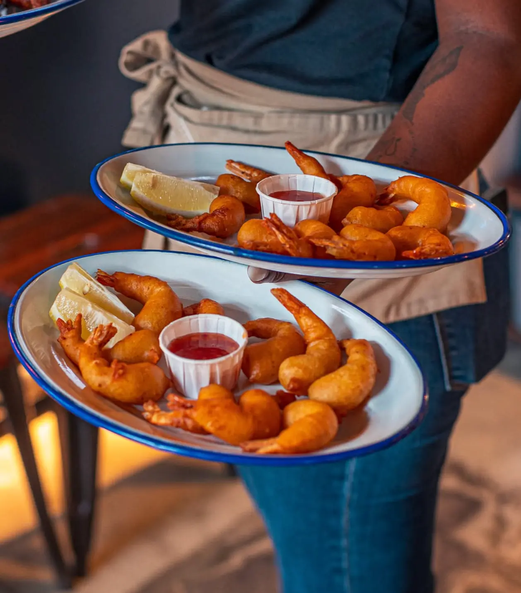
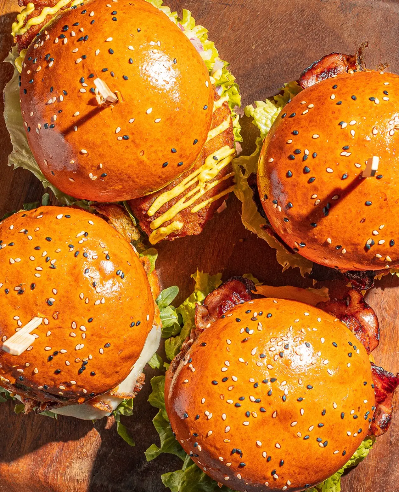

Blue Jeans
Novilho, bacon, porco desfiado, cheddar, cebola frita e maionese BJ.

BiteHambúrgueres com personalidade, cerveja fresca e mesas que nunca têm pressa.
Ver o menu ↘Não é uma hamburgueria básica
Aqui o burger chega alto, a cerveja chega fria e a mesa fica barulhenta. O Blue Jeans foi feito para quem prefere personalidade a formalidades.
Conhecer o Blue Jeans


The Blue Jeans effect
Não são fotografias de catálogo. São burgers a chegar, mãos a mergulhar, brindes no ar e pessoas a divertir-se.





Born from blue
O nome nasceu da cor do espaço. O resto ganhou personalidade à mesa.
O Blue Jeans nasceu na Rua Costa Pinto como um conceito mais jovem e descontraído. A ganga passou das paredes para os nomes do menu, para a atitude e para a forma de receber.
Ler a nossa históriaPaço de Arcos
Rua Costa Pinto 104
Paço de Arcos, Oeiras